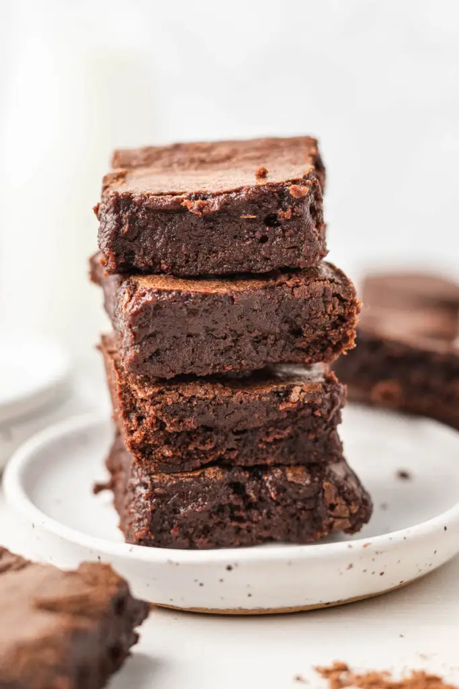

HOME
Brownies

Small batch desserts are my favorite mid-week indulgence. From chocolate chip cookies to mug cakes, I love having small batch recipes on hand to make whenever a dessert craving hits but I want just a couple servings of something sweet.
These small batch brownies are my latest creation, and I'm in love. I have a mug brownie recipe that takes under 5 minutes to prepare, but nothing beats a classic fudgy brownie that's been baked in the oven!
Ingredients
- 6 tablespoons unsalted butter melted and slightly cooled.
- ¾ cup granulated sugar.
- 1 large egg.
- 1 large egg yolk.
- ½ teaspoon pure vanilla extract.
- ⅓ cup natural unsweetened or Dutch process cocoa powder.
- ⅓ cup all-purpose flour.
- ¼ teaspoon instant espresso powder.
- ¼ teaspoon salt.
Steps
- Preheat the oven to 350°F (180°C). Spray a 9x5 loaf pan well with nonstick cooking spray, line the pan with parchment paper leaving some overhang for easy removal, and set aside.
- In a large mixing bowl, whisk the melted butter and sugar together until well combined. Then, whisk in the egg, egg yolk, and vanilla extract until fully combined.
- Sift in the cocoa powder, flour, instant espresso powder, and salt. Whisk until just combined.
- Scoop the batter into the prepared loaf pan and spread it around into one even layer.
- Bake for 18 to 23 minutes or until a toothpick inserted into the center comes out mostly clean with just a few moist crumbs.
- Bake for 18 to 23 minutes or until a toothpick inserted into the center comes out mostly clean with just a few moist crumbs.
See how easy it was!!!